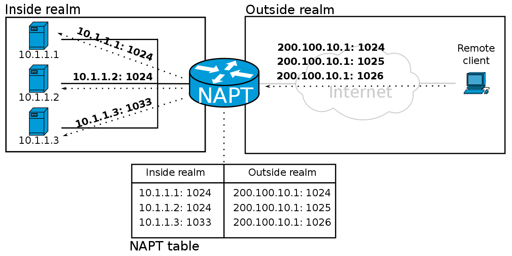

Vorlesung 2
Lesen und Schreiben von Textdateien
In vielen Fällen können Daten nicht als serialisiertes Objekt in Java gespeichert werden, manchmal braucht man einfach eine gute alte Textdatei. Zu diesem Zweck kann Java Textdateien schreiben. Dies funktioniert ähnlich wie das Schreiben eines Objekts:
objectOutputStream.writeObject(einObjekt);
fileWriter.write("Test");
Wie bei einem Objektstrom benötigen wir auch hier einen Try-Catch-Block zur Implementierung, da immer eine IOExeption ausgelöst werden kann. Für einen Dateistrom verwenden wir die Klasse FileWriter aus der java.io-Bibliothek.
try {
FileWriter writer = new FileWriter("test.txt");
writer.write("Pure excellence!");
writer.close();
}
catch (IOException ex){
ex.printStackTrace();
}
Java.io.File & Reader/Writer
Java.io.File
Als nächstes haben wir uns die Klasse Java.IO.File näher angesehen. Diese repräsentiert jedoch nicht den Inhalt der verwendeten Datei, sondern nur den Pfad zu ihr. File-Objekte können in Java wie String-Objekte verwendet werden. Dateien können erstellt, beschrieben und auch gelesen werden. Mit Funktionen wie dir.mkdir kann die Datei in ein Verzeichnis geschrieben werden.
Reader Writer
Um jetzt mit dem File Objekt irgendetwas anfangen zu können haben wir uns den File Reader und Writer angeschaut. Dieser schreibt Zeilenweise etwas in eine Datei, je nachdem was man braucht. Um zu verstehen wie diese beiden Klassen angewandt werden, haben wir ein paar Zeilen Code geschrieben, die aus einer Datei liest, und den Inhalt dann In eine andere Datei wieder reinschreibt. Damit dies ohne Probleme abläuft, braucht man einen Puffer. Dieser Puffer sorgt dafür, dass die gelesenen Zeilen zwischengespeichert werden, sodass sie dann aufgerufen werden können und in eine andere Datei geschrieben werden können. Hier der Code der Übung:
import java.io.BufferedReader;
import java.io.BufferedWriter;
import java.io.FileReader;
import java.io.FileWriter;
import java.io.IOException;
public class texteLesen {
public static void main(String[] args){
try {
BufferedReader reader = new BufferedReader(new FileReader("name.txt"));
BufferedWriter writer = new BufferedWriter(new FileWriter("name_kopie.txt"));
String text;
while((text = reader.readLine()) != null){
writer.write(text);
writer.newLine();
}
reader.close();
writer.close();
} catch (IOException e) {
e.printStackTrace();
}
try {
FileWriter writer = new FileWriter("test.txt");
writer.write("Pure Excellence!!!!");
writer.close();
}catch (IOException ex){
ex.printStackTrace();
}
}
}
Die Übung hat eine Weile gedauert, aber dann konnten wir uns schnell mit Client-Servern beschäftigen.
Netzwerke - Server/Client
Netzwerke
Im zweiten Teil der Vorlesung haben wir uns von der Client seitigen Programmierung entfernt und haben uns mehr mit den Servern auseinandergesetzt. Zum Aufbau einer Verbindung zwischen einem Client und Server muss der Client den Server kennen und der Server muss alle Clients kennen, die sich mit ihm verbinden. Hierzu werden TCP/IP Sockets verwendet. Diese sorgen dafür, dass eine Verbindung hergestellt wird. Die Verbindungen zwischen Clients uns Servers erfolgt mit der Übergabe der IP Adresse und der Port Nummer. Diese müssen beide Angegeben sein um eine Verbindung zu erstellen. Ports sind wie Türen die aus einem Rechner in die offene Welt leiten. Jeder Computer hat 2^16 Ports und kann sich somit mit vielen Servern, Diensten gleichzeitig verbinden. Für wichtige Dienste sind zum Beispiel Ports 0-1023 reserviert. Ports werden unterschieden zwischen internen und externen Ports unterschieden, hier entscheidet der Router (z.b eine FritzBox!) welcher Port wohin geht. Dies nennt sich Port Mapping.
Client Server Übung
Um alles was wir in der Vorlesung gelernt haben anzuwenden, haben wir mithilfe der Klasse ServerSocket und mit den Buffered Readern und Writern einen Client und Server programmiert.Hierzu haben wir 2 Klassen aufgebaut, den Client und den Server. in der los() Methode verbindet sich der Client mit dem Server auf Port 4242. Wenn eine Verbindung aufgebaut ist, schickt der Server dem Client eine Liste, die Tipps des Tages, ein Array von Tipps ausgibt.